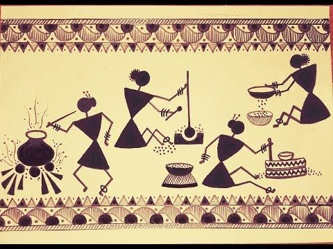
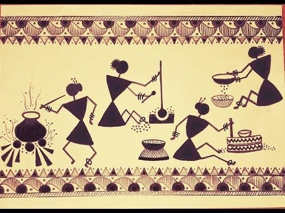
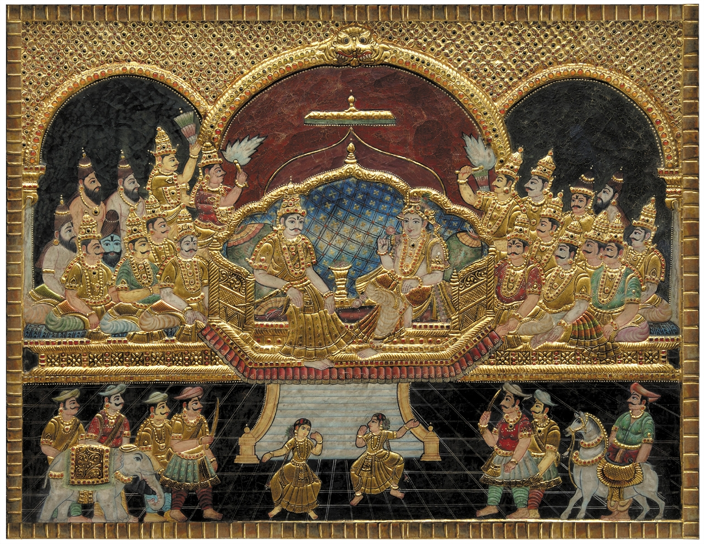
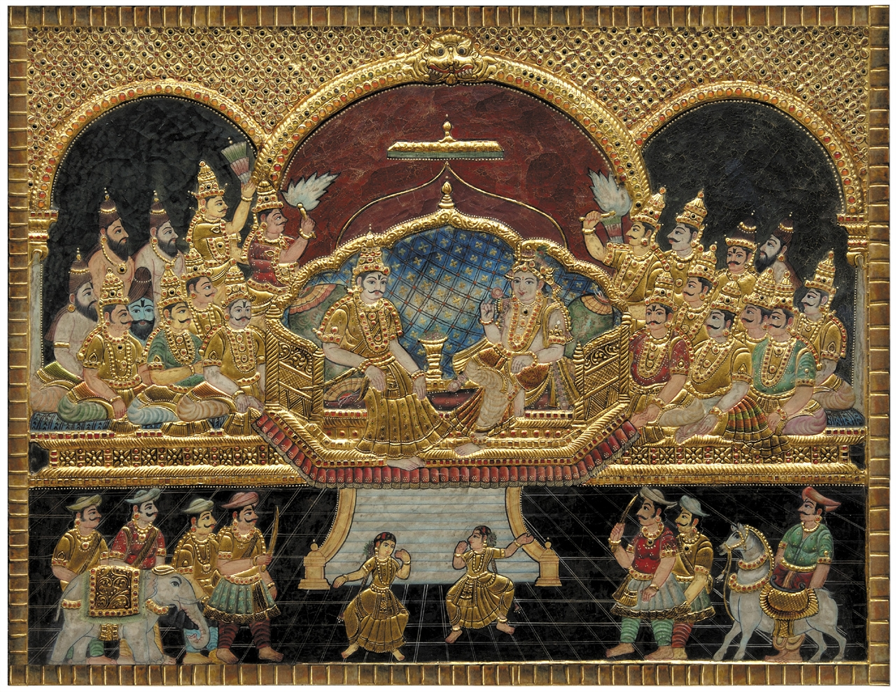
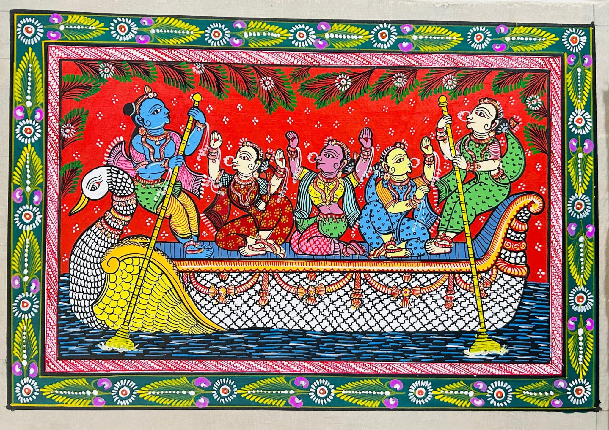
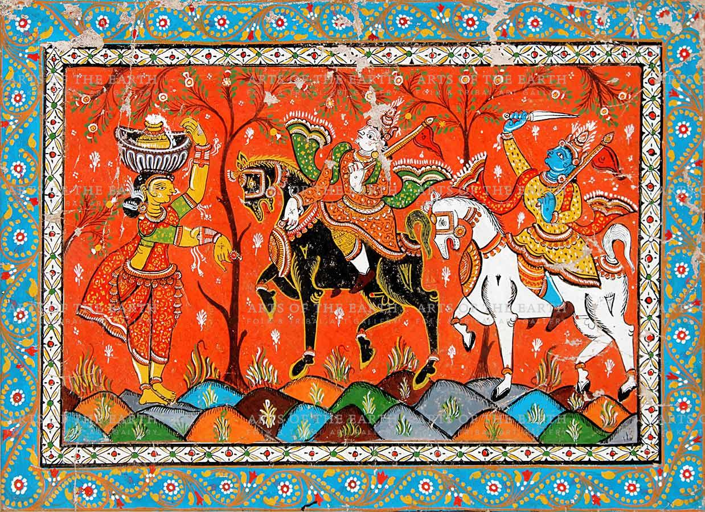
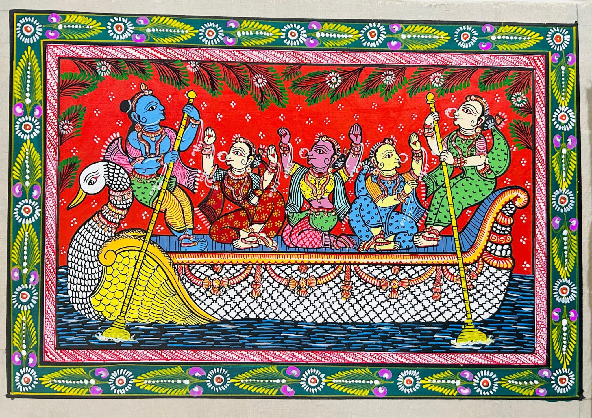
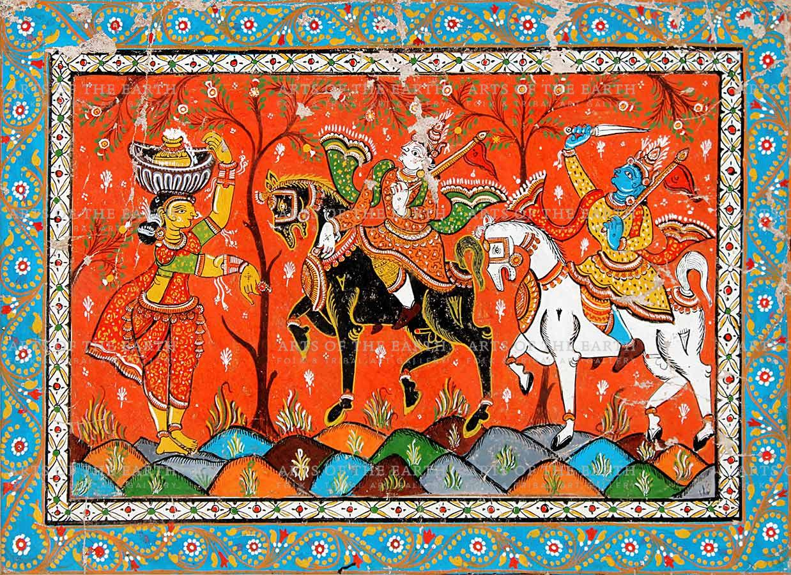
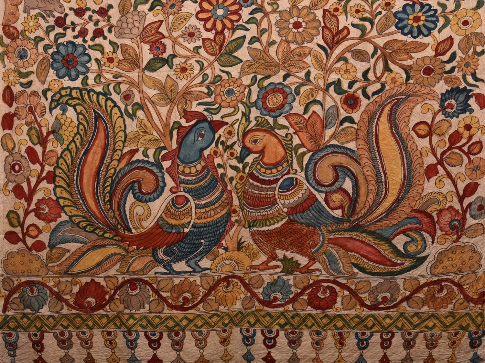
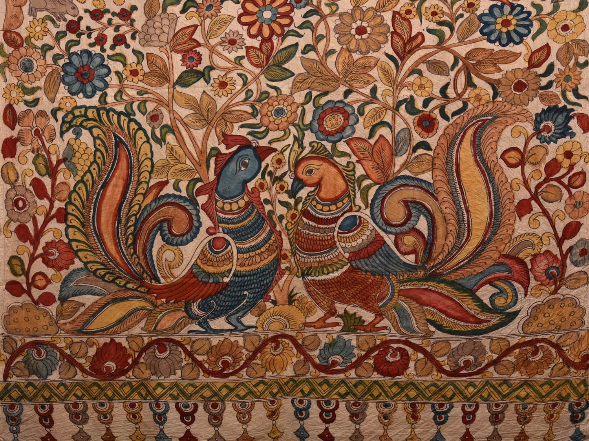

Indian Paintings
Indian paintings form a visual archive of the subcontinent's spiritual beliefs, social life, and historical imagination. Each style developed organically within its cultural environment.
Madhubani Painting
Madhubani painting, also known as Mithila art, originated in the Mithila region of Bihar. Traditionally practiced by women on mud walls, floors, and handmade paper, this art form uses natural pigments derived from plants, minerals, and charcoal.
The paintings are characterized by bold outlines, flat perspective, and intricate patterns filling every available space. Common themes include Hindu deities, celestial symbols, flora, fauna, and scenes from epics like the Ramayana.


Warli Painting
Warli painting is a tribal art form practiced by the Warli community of Maharashtra. Unlike colorful folk traditions, Warli art is minimalistic, using white pigment on an earthy brown background.
Human figures are depicted using simple geometric shapes such as circles, triangles, and lines. The paintings often portray village life, farming activities, rituals, and dances, emphasizing the relationship between humans and nature.
 

Tanjore Painting
Tanjore paintings originated in Tamil Nadu during the reign of the Chola dynasty. These paintings are known for their rich colors, surface relief, and extensive use of gold foil.
Primarily devotional in nature, Tanjore paintings depict Hindu gods and goddesses, with a strong emphasis on symmetry and ornamentation. The gold work adds a luminous, three-dimensional quality to the artwork.
 

Pattachitra Painting
Pattachitra is a traditional painting style from Odisha, created on cloth prepared with natural adhesives. The name derives from the Sanskrit words “patta” (cloth) and “chitra” (picture).
These paintings are narrative in nature and often illustrate stories of Lord Jagannath, Krishna, and episodes from Hindu mythology. Strong lines, bold colors, and decorative borders are defining features.
 



Kalamkari Painting
Kalamkari is a hand-painted or block-printed textile art form created using a bamboo pen, known as a “kalam.” Natural dyes are used to produce deep, earthy tones.
The themes of Kalamkari revolve around mythological stories, temple scrolls, and epics such as the Mahabharata. The process is highly labor-intensive and follows multiple stages of dyeing and washing.

 

Mughal Miniature Paintings
Mughal miniature paintings developed during the Mughal Empire and were heavily influenced by Persian art traditions. These paintings were created for royal manuscripts and court records.
They are known for their fine brushwork, delicate details, and realistic depiction of court life, battles, hunting scenes, and historical events. The art reflects a fusion of Indian and Persian aesthetics.


Cultural Significance
Indian paintings are not merely aesthetic objects. They serve as cultural texts, preserving stories, values, and traditions across generations. The artist’s role is that of a storyteller and cultural custodian.In India, a painting is rarely just a decoration on a wall; it’s a visual prayer, a historical record, and a community’s signature. Indian art is deeply rooted in the philosophy that "Chitra" (painting) is a medium to bridge the gap between the human and the divine.